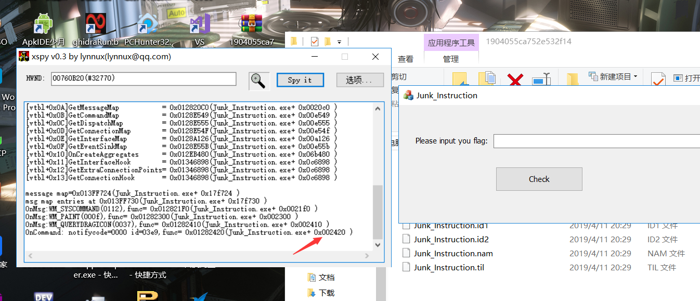

0x01 RE1-EasyCpp
这题是一道C++逆向，恕我无能，C++符号长到在下看到就想吐，只能用angr跑一跑这样子。。。这题先放着，以后再填坑，orz。。。
0x02 RE2-testRe
拿到题目扔进Ida，shift+f12通过关键字符串找到主要逻辑

首先是从标准输入读取16个字节大小的数据，然后进入主要函数进行加密处理，进去分析一波。
贴一下Ida分析出来的伪代码：
__int64 __fastcall sub_400700(void *a1, _QWORD *a2, __int64 input, size_t a4)
{
unsigned __int8 *v4; // rcx
__int64 v6; // [rsp+0h] [rbp-C0h]
int c; // [rsp+8h] [rbp-B8h]
char v8; // [rsp+Fh] [rbp-B1h]
int v9; // [rsp+10h] [rbp-B0h]
bool v10; // [rsp+17h] [rbp-A9h]
unsigned __int8 *v11; // [rsp+18h] [rbp-A8h]
char v12; // [rsp+27h] [rbp-99h]
int v13; // [rsp+28h] [rbp-98h]
int v14; // [rsp+2Ch] [rbp-94h]
unsigned __int64 i; // [rsp+30h] [rbp-90h]
size_t n_23; // [rsp+38h] [rbp-88h]
size_t v17; // [rsp+40h] [rbp-80h]
size_t v18; // [rsp+48h] [rbp-78h]
size_t j; // [rsp+50h] [rbp-70h]
size_t v20_i; // [rsp+58h] [rbp-68h]
int input_2; // [rsp+64h] [rbp-5Ch]
unsigned __int64 v22; // [rsp+68h] [rbp-58h]
int v23_20; // [rsp+74h] [rbp-4Ch]
__int64 *v24; // [rsp+78h] [rbp-48h]
__int64 input_1; // [rsp+80h] [rbp-40h]
void *v26; // [rsp+88h] [rbp-38h]
int v27; // [rsp+94h] [rbp-2Ch]
unsigned __int64 v28_16; // [rsp+98h] [rbp-28h]
__int64 v29; // [rsp+A0h] [rbp-20h]
_QWORD *v30; // [rsp+A8h] [rbp-18h]
void *s; // [rsp+B0h] [rbp-10h]
char v32; // [rsp+BFh] [rbp-1h]
s = a1;
v30 = a2;
v29 = input;
v28_16 = a4;
v27 = 0xDEADBEEF;
v26 = malloc(0x100uLL);
input_1 = v29;
v24 = &v6;
v22 = 0LL;
v17 = 0LL;
for ( i = 0LL; i < v28_16; ++i )
{
v13 = *(input_1 + i);
*(v26 + i) = byte_400E90[i % 0x1D] ^ v13;
*(v26 + i) += *(input_1 + i);
}
while ( 1 )
{
v12 = 0;
if ( v17 < v28_16 )
v12 = ~(*(input_1 + v17) != 0);
if ( !(v12 & 1) )
break;
++v17;
}
n_23 = ((0x28F5C28F5C28F5C3LL * (138 * (v28_16 - v17) >> 2) >> 64) >> 2) + 1;
v23_20 = ((0xAAAAAAAAAAAAAAABLL * ((v17 + v28_16) << 6) >> 64) >> 5) - 1;
v11 = &v6 - ((((0x28F5C28F5C28F5C3LL * (138 * (v28_16 - v17) >> 2) >> 64) >> 2) + 16) & 0xFFFFFFFFFFFFFFF0LL);
memset(v11, 0, n_23);
v20_i = v17;
v18 = n_23 - 1;
while ( v20_i < v28_16 )
{
input_2 = *(input_1 + v20_i);
for ( j = n_23 - 1; ; --j )
{
v10 = 1;
if ( j <= v18 )
v10 = input_2 != 0;
if ( !v10 )
break;
v22 = v11[j] << 6;
input_2 += v11[j] << 8;
v9 = 64;
v11[j] = input_2 % 58;
*(v26 + j) = v22 & 0x3F;
v22 >>= 6; // 10进制转58进制
input_2 /= 58;
v27 /= v9;
if ( !j )
break;
}
++v20_i;
v18 = j;
}
for ( j = 0LL; ; ++j )
{
v8 = 0;
if ( j < n_23 )
v8 = ~(v11[j] != 0);
if ( !(v8 & 1) )
break;
}
if ( *v30 > n_23 + v17 - j )
{
if ( v17 )
{
c = 61;
memset(s, 49, v17);
memset(v26, c, v17);
}
v20_i = v17;
while ( j < n_23 )
{
v4 = v11;
*(s + v20_i) = byte_400EB0[v11[j]];
*(v26 + v20_i++) = byte_400EF0[v4[j++]]; // 查表
}
*(s + v20_i) = 0;
*v30 = v20_i + 1;
if ( !strncmp(s, "D9", 2uLL)
&& !strncmp(s + 20, "Mp", 2uLL)
&& !strncmp(s + 18, "MR", 2uLL)
&& !strncmp(s + 2, "cS9N", 4uLL)
&& !strncmp(s + 6, "9iHjM", 5uLL)
&& !strncmp(s + 11, "LTdA8YS", 7uLL) )
{
HIDWORD(v6) = puts("correct!");
}
v32 = 1;
v14 = 1;
}
else
{
*v30 = n_23 + v17 - j + 1;
v32 = 0;
v14 = 1;
}
return v32 & 1;
}这边就是主要处理函数了，此道逆向题内嵌了很多无用代码，如果单纯的追踪输入流的话可能会使无用功增多，这边我们直接看最后的对比部分。

可以看到最后需要把字符串s和D9cS9N9iHjMLTdA8YSMRMp做一个strcmp，我们可以通过跟踪s的产生来分析输入的加密过程。
V11是由输入变换得到的，看下byte_400EB0中是些什么 。
可以看到这边是一个表，长度为58位，下面也有一张表，长度是64位，看到这边，大概可以猜到点什么，斜眼笑。所以这边就是基于V11进行查表操作，之后把结果存进s，然后就有了上面的和字符串做对比，所以之后要做的就是分析V11和输入的关系。
这边就是对输入做变换，将结果存进V11的过程，需要专门来分析一下。动态调试一波，发现是首先获取输入字符串的每个字节，转为58进制，之后按58进制数将所有单字节组合成一个58字节的整数。V11的产生知道了，捋一下思路，发现其实就是一个base58，这边可以直接用在线base58解密做，也可以中规中矩的写解密脚本。
这边贴一下脚本:
from binascii import *
s='D9cS9N9iHjMLTdA8YSMRMp'
t='123456789ABCDEFGHJKLMNPQRSTUVWXYZabcdefghijkmnopqrstuvwxyz'
flag=0
for i in range(len(s)):
flag=flag*58+t.index(s[i])
binascii.a2b_hex(str(hex(flag)[2:-1])
0x03 RE3-Junk_instruction
看题目就能看出是一个含有花指令混淆的程序，mfc程序的话这边用xspy获取check按钮控件的点击函数。

Ida打开程序，进入0x402420，动态调试一波，发现关键处理是在0x402600函数中。

追踪一下输入，发现在0x402809处有对输入长度的检测，这里程序要求长度必须为38。
如果长度为38，则进入正确的程序处理路径，这边由于存在大量花指令导致部分程序函数未识别，阻碍了分析，可以选择手动去花/脚本去花。
手动去花的话，这边并不麻烦，因为此题的加花内容都是一样的，甚至连字节数都是一样的，还是挺好改的，这边把从Call $+5开始，到mov ebx，22222222h之间的指令全部nop掉，nop完后函数体就明显了。
自动化去花：
这边贴一下脚本
- Idc脚本
#include <idc.idc>
static main(){
auto i,j,from,size;
from=0x402600;
size=0x4f0;//扫描数据块大小
for ( i=0; i < size;i++ ) {
if ((Byte(from)==0xe8)&&(Byte(from+1)==0x00)&&(Byte(from+2)==0x00)&&(Byte(from+3)==0x00))
{
Message("\n" + "Find\n");
for(j=0;j<59;j++)
{
PatchByte(from,0x90);
from++;
}
continue;
}
from++;
}
Message("\n" + "OK\n");
}IdaPytho脚本
from ida_bytes import get_bytes, patch_bytes import re addr = 0x12a2400 end = 0x12a3000 buf = get_bytes(addr, end-addr) def handler1(s): s = s.group(0) print("".join(["%02x"%ord(i) for i in s])) s = "\x90"*len(s) return s p = r"\xe8\x00\x00\x00\x00.*?\xc3.*?\xc3" buf = re.sub(p, handler1, buf, flags=re.I) patch_bytes(addr, buf) print("Done")
静态分析一波，贴一下伪代码(去花)：
char __thiscall sub_402600(void *this, char a2)
{
const WCHAR *v2; // eax
void *v3; // eax
char v5; // [esp+9h] [ebp-4BBh]
int v6; // [esp+208h] [ebp-2BCh]
int *v7; // [esp+20Ch] [ebp-2B8h]
int v8; // [esp+210h] [ebp-2B4h]
size_t v9; // [esp+214h] [ebp-2B0h]
int v10; // [esp+218h] [ebp-2ACh]
int v11; // [esp+21Ch] [ebp-2A8h]
char *v12; // [esp+220h] [ebp-2A4h]
char *v13; // [esp+224h] [ebp-2A0h]
int v14; // [esp+228h] [ebp-29Ch]
char v15; // [esp+22Ch] [ebp-298h]
char *v16; // [esp+230h] [ebp-294h]
void *v17; // [esp+234h] [ebp-290h]
char v18; // [esp+238h] [ebp-28Ch]
char v19; // [esp+239h] [ebp-28Bh]
char v20; // [esp+23Ah] [ebp-28Ah]
char v21; // [esp+23Bh] [ebp-289h]
char v22; // [esp+23Ch] [ebp-288h]
char v23; // [esp+23Dh] [ebp-287h]
char v24; // [esp+23Eh] [ebp-286h]
char v25; // [esp+23Fh] [ebp-285h]
char v26; // [esp+240h] [ebp-284h]
char v27; // [esp+241h] [ebp-283h]
char v28; // [esp+242h] [ebp-282h]
char v29; // [esp+243h] [ebp-281h]
char v30; // [esp+244h] [ebp-280h]
char v31; // [esp+245h] [ebp-27Fh]
char v32; // [esp+246h] [ebp-27Eh]
char v33; // [esp+247h] [ebp-27Dh]
char v34; // [esp+248h] [ebp-27Ch]
char v35; // [esp+249h] [ebp-27Bh]
char v36; // [esp+24Ah] [ebp-27Ah]
char v37; // [esp+24Bh] [ebp-279h]
char v38; // [esp+24Ch] [ebp-278h]
char v39; // [esp+24Dh] [ebp-277h]
char v40; // [esp+24Eh] [ebp-276h]
char v41; // [esp+24Fh] [ebp-275h]
char v42; // [esp+250h] [ebp-274h]
char v43; // [esp+251h] [ebp-273h]
char v44; // [esp+252h] [ebp-272h]
char v45; // [esp+253h] [ebp-271h]
char v46; // [esp+254h] [ebp-270h]
char v47; // [esp+255h] [ebp-26Fh]
char v48; // [esp+256h] [ebp-26Eh]
char v49; // [esp+257h] [ebp-26Dh]
const char *v50; // [esp+258h] [ebp-26Ch]
char *v51; // [esp+25Ch] [ebp-268h]
int i; // [esp+260h] [ebp-264h]
char *v53; // [esp+264h] [ebp-260h]
char v54; // [esp+26Dh] [ebp-257h]
char v55; // [esp+26Eh] [ebp-256h]
char v56; // [esp+26Fh] [ebp-255h]
int v57; // [esp+270h] [ebp-254h]
char v58; // [esp+28Ch] [ebp-238h]
char v59; // [esp+28Dh] [ebp-237h]
int v60; // [esp+38Ch] [ebp-138h]
int v61; // [esp+390h] [ebp-134h]
__int16 v62; // [esp+394h] [ebp-130h]
char v63; // [esp+396h] [ebp-12Eh]
char v64; // [esp+397h] [ebp-12Dh]
char v65; // [esp+48Ch] [ebp-38h]
char v66; // [esp+48Dh] [ebp-37h]
int v67; // [esp+4C0h] [ebp-4h]
v17 = this;
v67 = 0;
v18 = 91;
v19 = -42;
v20 = -48;
v21 = 38;
v22 = -56;
v23 = -35;
v24 = 25;
v25 = 126;
v26 = 110;
v27 = 62;
v28 = -53;
v29 = 22;
v30 = -111;
v31 = 125;
v32 = -1;
v33 = -81;
v34 = -35;
v35 = 118;
v36 = 100;
v37 = -80;
v38 = -9;
v39 = -27;
v40 = -119;
v41 = 87;
v42 = -126;
v43 = -97;
v44 = 12;
v45 = 0;
v46 = -98;
v47 = -48;
v48 = 69;
v49 = -6;
v2 = sub_401570(&a2);
v14 = sub_4030A0(v2);
v10 = v14;
LOBYTE(v67) = 1;
v3 = sub_401570(v14);
sub_403000(&v57, v3);
LOBYTE(v67) = 3;
sub_4012A0(&v15);
v16 = unknown_libname_1(&v57);
v51 = v16;
v13 = v16 + 1;
v51 += strlen(v51);
v11 = ++v51 - (v16 + 1);
v9 = v51 - (v16 + 1);
v65 = 0;
memset(&v66, 0, 0x27u);
strncpy(&v65, v16, v51 - (v16 + 1));
if ( sub_402AF0(&v65) )
{
v54 = 0;
v56 = 0;
LABEL_7:
v55 = v56;
}
else
{
v60 = 1919252337;
v61 = 1769306484;
v62 = 28783;
v63 = 0;
memset(&v64, 0, 0xF5u);
v58 = 0;
memset(&v59, 0, 0xFFu);
memset(&v5, 0, 0x1FFu);
v50 = &v60;
v7 = (&v60 + 1);
v50 += strlen(v50);
v6 = ++v50 - (&v60 + 1);
sub_402CA0(&v58, &v60, v50 - (&v60 + 1));
v53 = &v65;
v12 = &v66;
v53 += strlen(v53);
v8 = ++v53 - &v66;
(loc_402E80)(v17, &v58, &v65, v53 - &v66);
for ( i = 31; i >= 0; --i )
{
if ( *(&v65 + i) != *(&v18 + i) )
{
v56 = 0;
goto LABEL_7;
}
}
v55 = 1;
}
LOBYTE(v67) = 0;
sub_403060(&v57);
v67 = -1;
sub_4012A0(&a2);
return v55;
}等花指令全部清除完以后再进行动态调试，发现主要逻辑是在0x402ca0中，Ida分析一波发现是这样子的：
可以很明显的看到是一个rc4加密函数，其中第二个参数是密钥。

rc4加密过后的输入和v18指向的常量字符串做对比。
解密逻辑：把v18指向的常量rc4解密，密钥匙qwertyuiop，解密出的就是flag了。
这边解密出来的结果并不对，动态调了一下发现还有个输入逆序操作：

所以结果的逆序才是真正的flag
贴一下脚本：
d = [0x5B, 0xD6, 0xD0, 0x26, 0xC8, 0xDD, 0x19, 126, 110, 62, -53, 22, -111, 125, -1, -81, -35, 118, 100, -80, -9, -27, -119, 87, -126, -97, 12, 0, -98, -48, 69, -6]
import sys, os, hashlib, time, base64
def rc4(plain, key):
box = list(range(256))
j = 0
for i in range(256):
j = (j + box[i] + ord(key[i % len(key)])) % 256
box[i], box[j] = box[j], box[i]
print(box)
# print(type(box)) #for_test
# return box
res = []
i = j = 0
for s in plain:
i = (i + 1) % 256
j = (j + box[i]) % 256
box[i], box[j] = box[j], box[i]
t = (box[i] + box[j]) % 256
k = box[t]
res.append(chr((s ^ k)&0xff))
return res
r = rc4(d, "qwertyuiop")
r = [(i) for i in r]
print("".join(r[::-1]))贴一下解密结果：

0x04 总结
赛题质量还行，但是比赛时间太短了，WP放出后的复盘还是能学到不少的。
继续努力~